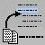

The "Paste As Sub-Item" function pastes the currently copied (and contiguous) subtrees as a child of the currently selected subtree in whatever location the user selects among the list of valid places to paste. It is activated in the "Edit" menu or by the button

.